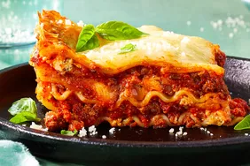

Lasagna Recipe

Description
This is a simple yet incredible lasagna recipe inspired by authentic Italian lasagna from
Bologna.
Ingredients
- 9 lasagna noodles
- 2 pounds of minced meat. 1 pound 85-90% beef, 1 pound of your choice (beef, veal,
pork)
- 24oz tomato passata
- 2 table spoons tomato paste
- 1 white or yellow onion
- 2-3 large loose carrots
- 3 celery sticks
- 3 cloves of garlic
- 1 bunch of basil leaves
- 2 table spoons extra virgin olive oil
- several table spoons salt
- 2 teaspoon freshly cracked black pepper
- Cheeses of your choice (parmigiano regiano, mozzarella, ricotta, etc)
Steps
- Roughly chop all vegetables and blend in a food processor (blend for a shorter
time if you want small chunks of vegetables, blend for longer if you want the
vegetables to nearly disappear into the sauce) to create our sofrito.
- Saute the blended sofrito in extra virgin olive oil and add 1 tablespoon of salt.
- After 5 minutes, add minced meat and mash into small pieces using a ground
meat masher/chopper.
- Once meat is mostly cooked (about 20% pink) and tomato paste and seasonings (mash
very thoroughly for small crumbly meat sauce).
- Add tomato passata and mix well. Lower heat to a simmer and occasionally stir
every 10 minutes.
- Boil water in a large pot.
- Add 2 large pinches of salt to the water and add lasagna noodles (ensure the boiling
water covers the noodles completely).
- Boil the lasagna noodles per the instructions on the packaging
- To assemble, add a very thin layer of the meat sauce to a baking dish.
Then add a layer of lasagna noodles and heaping spoonfools of meat sauce. Add cheese
as desired.
- Once assembled, broil the dish to melt the cheese and create a golden crispy top
layer of melted cheese.
- Enjoy.